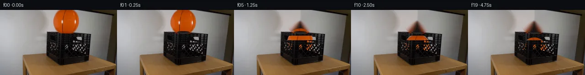

![首帧]()

Round 00
2026-11-05T01:44:51.572449+00:00像素候选变化代码 +207/−0inspection 更新
pixels df65e92e96b68bb0 · code 9d6198917632a681
查看本轮 generate.py 真实 diff
--- previous/generate.py
+++ current/generate.py
@@ -0,0 +1,207 @@
+"""PixelWorld-Text case_0013.
+
+Basketball released over a black plastic crate: the ball drops through the
+opening, bounces once on the inner floor and settles inside the crate, visible
+through the open top, handle slot and lattice holes.
+
+All pixels are produced locally: the real ball sprite (color, seams, soft
+alpha) is extracted from first_frame.png; the static plate is the original
+frame with the ball removed (OpenCV inpaint + row-wise rim reconstruction);
+front plastic is recovered as border-connected dark structure and composited
+in front of the ball. Frame 00 is a byte-exact copy of first_frame.png.
+"""
+from pathlib import Path
+import numpy as np
+from PIL import Image, ImageDraw
+import cv2
+from scipy import ndimage
+import artifact_io
+
+ROOT = Path(__file__).parent
+orig = np.array(Image.open(ROOT / 'first_frame.png').convert('RGB'))
+H, W = orig.shape[:2]
+assert (H, W) == (144, 256)
+
+CX0, CY0, R0 = 144.5, 22.0, 27.5 # ball centre / nominal radius in f0
+FLOOR_BOTTOM = 115.5 # resting ball-bottom (image y)
+
+# ---------------------------------------------------------------------------
+# 1. Ball sprite (RGBA) extracted from frame 0
+# ---------------------------------------------------------------------------
+r = orig[:, :, 0].astype(int)
+g = orig[:, :, 1].astype(int)
+b = orig[:, :, 2].astype(int)
+core = (r > 120) & (g < 150) & (b < 100) & (r - g > 28)
+core[58:] = False # keep the upper ball only
+lab, n = ndimage.label(core)
+sizes = ndimage.sum(np.ones_like(lab), lab, range(1, n + 1))
+ball0 = lab == (int(np.argmax(sizes)) + 1)
+ball0 = ndimage.binary_closing(ball0, structure=np.ones((3, 3)))
+ball0 = ndimage.binary_fill_holes(ball0)
+ball0 = ndimage.binary_dilation(ball0, iterations=1)
+ball0 = ball0 & (np.fromfunction(lambda y, x: (x - CX0) ** 2 + (y - CY0) ** 2,
+ (H, W)) <= (R0 + 2.2) ** 2)
+
+# soft alpha from distance transform (boundary pixels ~ 0.5)
+dist = cv2.distanceTransform(ball0.astype(np.uint8), cv2.DIST_L2, 5)
+alpha0 = np.clip(dist - 0.5, 0.0, 1.0)
+
+# sprite canvas: global x 115..173, y -6..51
+XL, YT, SW, SH = 115, -6, 59, 58
+spr = np.zeros((SH, SW, 3), np.float32)
+spa = np.zeros((SH, SH + 0) if False else (SH, SW), np.float32)
+for iy in range(SH):
+ gy = YT + iy
+ if gy >= 0:
+ spr[iy] = orig[gy, XL:XL + SW]
+ spa[iy] = alpha0[gy, XL:XL + SW]
+ else: # clipped cap: mirror across cy0
+ src = -gy
+ spr[iy] = orig[src, XL:XL + SW]
+ xx = np.arange(XL, XL + SW)
+ d2 = (xx - CX0) ** 2 + (gy - CY0) ** 2
+ spa[iy] = np.clip(np.sqrt(np.maximum(R0 ** 2 - d2, 0)) * 0 +
+ np.clip(R0 - np.sqrt(d2) + 0.5, 0, 1), 0, 1)
+# smooth the mirrored cap so it joins seamlessly
+spr[:6] = cv2.GaussianBlur(spr, (5, 5), 1.4)[:6] if False else cv2.GaussianBlur(spr, (5, 5), 1.4)[:6]
+spr = np.clip(spr, 0, 255)
+
+# ---------------------------------------------------------------------------
+# 2. Static plate B: original with the ball removed
+# ---------------------------------------------------------------------------
+mask_in = cv2.dilate(ball0.astype(np.uint8), np.ones((3, 3), np.uint8))
+B = cv2.inpaint(orig, mask_in, 4, cv2.INPAINT_TELEA)
+# regularise the rim band / dark interior hidden behind the ball (y 49..57)
+lumB = B.mean(2)
+rs = np.random.RandomState(7)
+for y in range(49, 58):
+ side = np.concatenate([B[y, 100:113].reshape(-1, 3),
+ B[y, 177:192].reshape(-1, 3)])
+ side = side[side.mean(1) < 85]
+ if len(side) < 8:
+ continue
+ cL = np.median(B[y, 100:113][B[y, 100:113].mean(1) < 95], axis=0) \
+ if (B[y, 100:113].mean(1) < 95).any() else side.mean(0)
+ cR = np.median(B[y, 177:192][B[y, 177:192].mean(1) < 95], axis=0) \
+ if (B[y, 177:192].mean(1) < 95).any() else side.mean(0)
+ xs = np.arange(114, 177)
… diff truncated; 120 more lines …